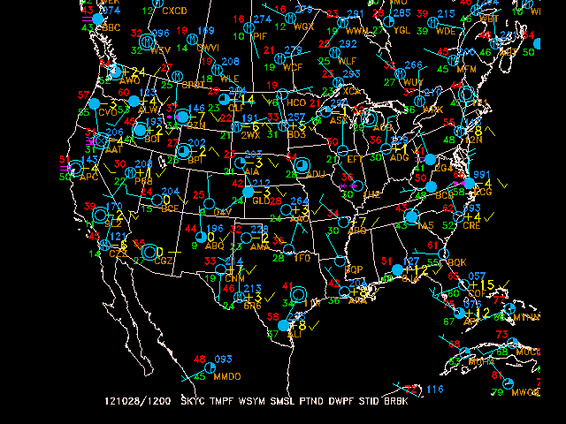

The program sfmap plots any parameters which can be derived from the data in a GEMPAK surface data file.
AREA Data area GAREA Graphics area SATFIL Satellite image filename(s) RADFIL Radar image filename(s) IMCBAR Color/ornt/anch/x;y/ln;wd/freq SFPARM Surface parameter list DATTIM Date/time SFFILE Surface data file COLORS Color list MAP Map color/dash/width/filter flag MSCALE fgc;bgc;mask/units/lat;hide/values/anch/x;y/ln;wd/freq|text_info|t LATLON Line color/dash/width/freq/inc/label/format TITLE Title color/line/title CLEAR Clear screen flag PANEL Panel loc/color/dash/width/regn DEVICE Device|name|x size;y size|color type PROJ Map projection/angles/margins|drop flag FILTER Filter data factor TEXT Size/fnt/wdth/brdr/N-rot/just/hw flg LUTFIL Enhancement lookup table filename STNPLT Txtc/txt attr|marker attr|stnfil#col CLRBAR Color/ornt/anch/x;y/ln;wd/freq|text_info LSTPRM Filtered parm|x;y|TEXT info
To list the variable definitions in the same format as they are entered, type list or l for short:
GEMPAK-SFMAP>l
AREA = WV
GAREA = WV
SATFIL =
RADFIL =
IMCBAR =
SFPARM = SKYC;TMPF;WSYM;PMSL;;DWPF;BRBK
DATTIM = LAST
SFFILE = $GEMPAK/data/hrcbob.sfc
COLORS = 1
MAP = 1
MSCALE = 0
LATLON =
TITLE = 1
CLEAR = YES
PANEL = 0
DEVICE = XW
PROJ = MER
FILTER = YES
TEXT = 1
LUTFIL =
STNPLT =
CLRBAR =
LSTPRM =
GEMPAK-SFMAP>
What are looking at? hrcbob.sfc? WV?
These are the program defaults and allow us to list and plot data immediately when starting to use GEMPAK.
Run sfmap now:
GEMPAK-SFMAP>r
Creating process: xw for queue 9797635
SFMAP PARAMETERS:
Data area: WV
Graphics area name: WV
Valid parameters: SKYC TMPF WSYM PMSL BLNK DWPF BRBK
Parameter colors: 1 1 1 1 0 1 1
Time: 910820/0600
File: $GEMPAK/data/hrcbob.sfc
Map: 1
Title: 1
Device: XW
Projection: MER
Clear screen: YES
Filter: YES
Filter factor: 1.00
Panel: 0
Enter <cr> to accept parameters or type EXIT:
Press
The X window will display surface observations from "Hurricane Bob" in 1991, centered around West Virginia.
GAREA is the graphics area: the part of the map that will be plotted. AREA is the data area: the area from which to select the data to plot. These areas exist separately for when you might want individual control over both the region of the map that is plotted (GAREA) and the region that is covered by data (AREA).
Both are defined by the same syntax (below), but can be defined a number of different ways:
Lat/Lon
AREA = 25;-125;50;-65
defines the corners Lat 1; Lon 1; Lat 2; Lon 2 of the form LL (1); UR (2).
 Be aware that South and West are negative!
Be aware that South and West are negative!
Center/Offset
AREA = #37.5;-95;12.5;30
In the form #Center lat; Center lon; Delta lat; Delta lon
Geographic Area (defined in the GEMPAK geography table $GEMTBL/stns/geog.tbl)
AREA = US the region around the United States.
AREA = MX the region around Mexico
AREA = CO the region around Colorado.
AREA = @CO only information inside Colorado.
AREA = @AU:C Australia (use :C syntac for countries
other than US, CN and MX)
Station Area and Station Name
AREA = LAX the region around Los Angelos
AREA = @DEN only information from the Denver station
AREA = @DEN;LAX;PDX
only Denver, LA and Portland stations
Full Data Set (all stations in the file)
AREA = DSET
Contracted and Expanded Areas
AREA = CO+ AREA is contracted around CO
AREA = CO++ AREA is contracted further around CO
AREA = CO- AREA is expanded beyond CO
AREA = @CO-- AREA is expanded even more, but only includes
information inside Colorado
Integer Value (stations are selected if they fall into the range indicated)
AREA = SELV:0:2000 Selects stations with elevations
between 0 and 2000 meters
AREA = SLAT:-45:45 Selects stations located between 45
degrees south and 45 north
AREA = SLON:-45:45 Between 45 west and 45 east
Any station information can be used in this way:
STID (Station ID-letters)STNM (Station Number)SLAT (Station Lat)SLON (Station Lon)STIM (Station Report Time)
If you want to plot a map with complete data coverage, including the edges, you should make
AREAbigger thanGAREA. This can be done by adding a minus-toAREAor a plus+toGAREA:GEMPAK-SFMAP> area = wv- GEMPAK-SFMAP> garea = wv GEMPAK-SFMAP> r
 MAKE NOTE
MAKE NOTE GAREA can be specified in some of the same ways as AREA, with one caveat: You can not use the @ symbol to specify GAREA.
Because GAREA defines the boundaries of the graph, adding @ would force an irregular boundary. Think of the @ sign as a way to restrict the selection of data.
Multiple surface parameters may be defined in SFPARM by entering a list separated by semicolons:
sfparm = tmpc;pmsl;skyc
GEMPAK can also calculate a number of parameters if the requested parameter is not present in the data set, for example, such as with relative humidity, which GEMPAK determines from a function defined
internally as RELH=FUNC (TMPC;DWPT).
sfparm = RELH
Arithmetic functions and upper and lower limits may be used in the paramater definition:
sfparm = tmpc/2
sfparm = pmsl>1000
where pmsl>1000 restricts sea-level pressure records to those below 1000 mb,
You can manipulate the values of parameters using the following arithmetic functions:
*/+-><Raw hourly and special reports (if stored in a file) can be accessed as well:
sfparm = text
sfparm = spcl
sfparm = text;spcl
sfparm = pmsl;tmpc;wthr;text
For now, to continue with our SFMAP example, set sfparm back to:
sfparm = SKYC;TMPF;WSYM;PMSL;;DWPF;BRBK
DATTIM is date and time, formatted in a number of ways:
Explicit, for all observations at time YYMMDD/HHMM:
DATTIM = 101025/1200
Abbreviation, for the last available date and/or time specified:
DATTIM = 25/1200 DD/HHMM
DATTIM = 25/12 DD/HH
DATTIM = /1200 /HHMM
DATTIM = 12 HH
Range, for all observations between the two date/time ranges:
DATTIM = 17/00-17/1200
List, for all available observations that match the exact date/times listed:
DATTIM = 17/00;17/06;17/12
List, for all times in the file, useful for when you don`t know the times when the data was collected:
DATTIM = list
Last, for observations from the last date/time in the file:
DATTIM = last
All, for observations from every date/time in the file, useful for comprehensive analyses:
DATTIM = all
What happens when we change DATTIM = all for sfmap:

DEVICE = xwyou should see an animation through all times in the file. IfDEVICE = gifyou'll see stations plotted multiple times to the map ifCLEAR = nois defined.
CLEAR is a logical variable which determines whether the graphics screen is cleared before plotting.
CLEAR = YES (or CLEAR = y for short) will clear the window of all previously-drawn graphics before plotting what has been specified.CLEAR = NO (or CLEAR = n) will draw what is currently specified over any previously-drawn graphics.With CLEAR = n, you have the ability to overlay observations, images, maps and various vector and scalar quantities, depending on the GEMPAK program being used. Additionally, because GEMPAK mapping programs operate within one gplt process (until gpend is called from the command line), you can overlay fields on the same map projection using multiple programs!
PROJ determines the map projection, and directly affects the way the map looks on the screen. PROJ and GAREA together give you the flexibility to generate very specific map projections. Both simple map projections and full map projections are avaiable to select:
Simple Map Projections
Simple map projections only require the three-character identifier to be defined:
proj = mer
Available simple map projections:
MER Mercator
NPS North Polar Stereographic
SPS South Polar Stereographic
LCC Northern Hemisphere Lambert Conic Conformal
SCC Southern Hemisphere Lambert Conic Conformal
CED Cylindrical Equidistant
MCD Modified Cylindrical Equidistant
UTM Universal Transverse Mercator
NOR North Orthographic
SOR South Orthographic
Full Map Projections
For full map projections, each definition MUST be followed by three specified angles based on the projection class (CYL,AZM, CON), which are defined like so:
proj = STR/a1;a2;a3
proj = STR/90;-100;0
a1 (90) is the standard latitude through which the projection plane passesa2 (-100) is the central longitude (i.e. the longitude that lies parallel to the grid columns).a3 (0) angle to skew the projection, defined as zero for these examples. You can read about these angles and projections in more detail on the PROJ parameter page.
Available full map projections:
MER (CYL) Mercator
CED (CYL) Cylindrical Equidistant
MCD (CYL) Modified Cylindrical Equidistant
STR (AZM) Polar Stereographic
AED (AZM) Azimuthal Equidistant
ORT (AZM) Orthographic
LEA (AZM) Lambert equal area
GNO (AZM) Gnomonic
LCC (CON) Northern Hemisphere Lambert Conic Conformal
SCC (CON) Southern Hemisphere Lambert Conic Conformal
Display the visible satellite image from 18Z and overlay the surface data for the area covered by the image. Plot a standard station model for each location in the data set. The surface data to plot include:
Therefore, the surface parameters used would be
SFPARM = skyc; tmpf; wsym; smsl; ptnd; dwpf; stid;; brbk
and colors
COLORS = 26; 2; 7; 25; 20; 22; 18; 6
AREA = us
GAREA = dset
SATFIL = $GEMPAK/data/VIS_910819_1801
RADFIL =
IMCBAR =
SFPARM = skyc;tmpf;wsym;smsl;ptnd;dwpf;stid;;;brbk
DATTIM = 910819/1800
SFFILE = $GEMPAK/data/hrcbob.sfc
COLORS = 26;2;7;25;20;22;18;6
MAP = 1
LATLON =
TITLE = 1
CLEAR = yes
PANEL = 0
DEVICE = xw
PROJ = sat
FILTER = 1
TEXT = 0.75/22//hw
LUTFIL =
STNPLT =
CLRBAR =
LSTPRM =
COLORS, MAP, TITLE, FILTER and TEXT control the graphic colors, line thickness,
style, text fonts and titles. These map aesthetics allow you to generate very specific graphics. Check the parameter definition pages in the manual for more detail, or with the phelp command at the GEMPAK prompt.
After running sfmap, you can see how the colors match the surface parameters:
Valid parameters: SKYC TMPF WSYM SMSL BLNK DWPF STID BLNK BLNK BRBK
Parameter colors: 26 2 7 25 20 22 18 0 0 6

sfmapcommand prompt, you can save the current definitions with the commandGEMPAK-SFMAP>save bob.ntsthen exit the program and check that the file exists
GEMPAK-SFMAP>e ls -la ... -rw-r--r-- 1 gempak staff 3151 Oct 29 14:38 bob.ntsYou can reload this file in any other GEMPAK program, at any time, to retrieve the saved definitions, though only the variables which were saved in
sfmapwill be reloaded:GEMPAK-SFMAP> restore bob.nts
Now let's look at data from today. Using an alias for real-time metar observations SFFILE = metar, and DATTIM = 1200, we can redisplay the map for this morning.
Make note of what the two new definitions are doing to retreive observations:
SFFILE = metar definition uses an alias to the latest GEMPAK metar surface file (typically $GEMDATA/surface/YYYYMMDD_sao.gem, where YYYYMMDD is the current year, month and day, such as 20121028).DATTIM = 1200 uses only the 1200 UTC records in SFFILEBut how to know the latest available? Exit SFMAP and return to the terminal, and execute the command line program sfctime metar and you will see surface reports in today's GEMPAK surface file for every twenty minutes:
GEMPAK-SFMAP>e
> sfctime metar
...
121028/1740
121028/1800
121028/1820
121028/1840
121028/1900
>
Inside our sfmap session, let's define a new AREA, GAREA, and PROJ:
AREA = us-
GAREA = us
SFFILE = metar
DATTIM = last
SATFIL =
CLEAR = y
PROJ = STR/90;-100;0
GEMPAK-SFMAP>r

SFPARM = skyc;tmpf;wsym;smsl;ptnd;dwpf;stid;;;brbk 1 2 3 4 5 6 7 10correspond to chart position:
18 14 8 16 22 19 2 10 4 23 12 3 1 5 13 20 6 11 7 24 21 15 9 17 25which also corresponed to the standard ordering of data on a surface chart:
To overlay the current GOES satellite visible image on your map, you must explicitly define SATFIL. To find the latest EAST-CONUS visible satellite image, list the contents of $SAT/EAST-CONUS/1km/VIS/ with the command:
ls $SAT/EAST-CONUS/1km/VIS/ | tail -1
VIS_20121029_2132
then use the entire path name for SATFIL (evironmental variables allowed):
GAREA = dset
PROJ = sat
SATFIL = $SAT/EAST-CONUS/1km/VIS/VIS_20121029_2132
DATTIM = last
GEMPAK-SFMAP>r
 Make Note:
Make Note:
SATFIL or RADFIL, you must set PROJ either to sat or rad.DATTIM = last, there may not be any surface observations available in the last timeslot in the file referenced by metar. If this is the case, explicitly define DATTIM using the a previous 20 minutes interval (i.e. 1140, 1200, 1220).gpend after finishing a GEMPAK graphics program session.